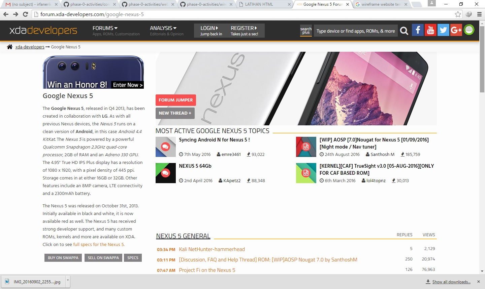
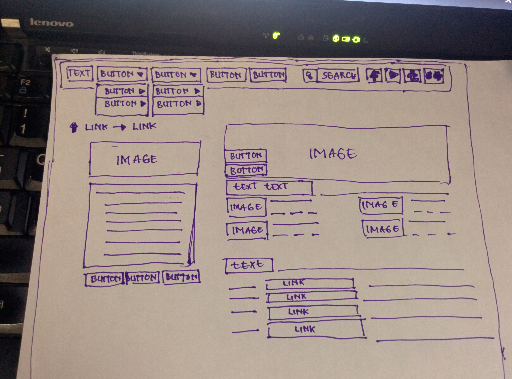

WIREFRAME
Jumat, 2 September 2016
- Jabarkan masalah apa yang halaman web tersebut ingin pecahkan melalui tampilan visual? 
- Buatlah wireframe tiap halaman yang sudah dipilih. Kamu bisa menggunakan kertas dan pulpen saja (yang kemudian nanti difoto), maupun tool wireframing digital (yang bisa di-export atau screenshot). 
Dalam halaman website tersebut ada beberapa button link yang memudahkan user berselancar ke halaman yang di inginkan. Dalam halaman ini user dimudahkan dengan informasi mengenai smartphonenya. Ditambah beberapa link yang paling sering dikunjungi dalam halaman smartphone